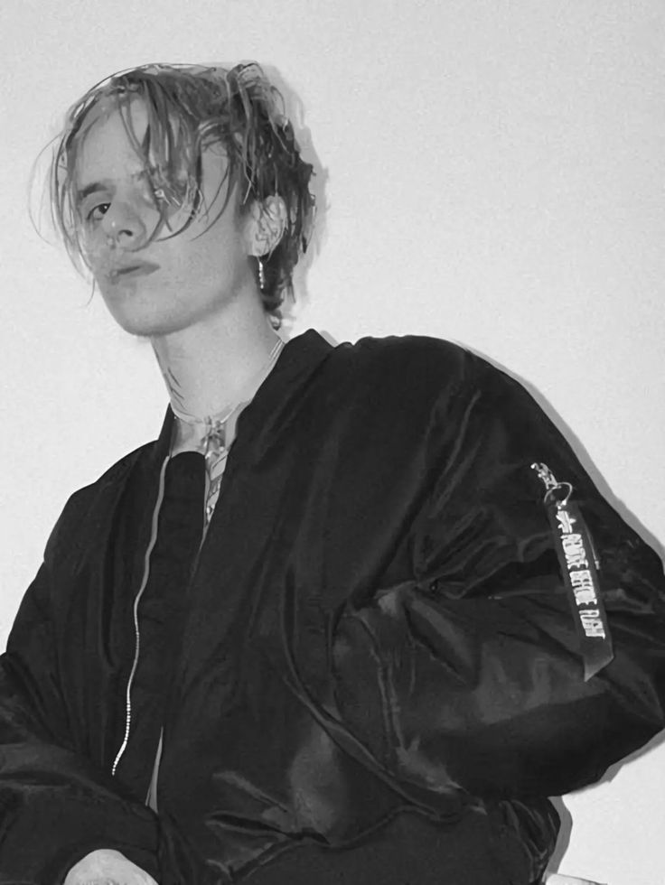

Pharaoh (рус. Фарао́н;
настоящее имя — Глеб Генна́дьевич Голу́бин;
род. 30 января 1996, Москва) —
российский рэпер. Бывший участник
Grindhouse и YungRussia,
ныне — лидер творческого объединения
Dead Dynasty.
Песня "Zatoichi" исполнителя PHARAOH
отсылает к фильму "Затойчи" о слепом
страннике, режиссёре Такэси Китано.
В песне говорится о движении, стальной
вибрации и продолжении пути утром ранним,
что создает атмосферу напряжения и опасности.
Текст песни описывает действия персонажа,
его стремление и борьбу, что делает её
захватывающей и эмоциональной.